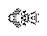

Back in 1993 and '94, Hartmut Holzwart was busy tweaking his search program and generating large quantities of c/2 spaceships. He sent one of his ordinary batches on March 11, 1994, and I was playing with it a few days later. As a primitive means of destroying the end of spaceships to find independent components, I put something near the tail end of one of the spaceships. To my amazement, however, only a small 3-cell piece (which I would later rediscover as a "puff suppressor") came off, and the rest of it started to puff!
Spaceship: The first line puffer: 
I had stumbled on a puffer. After a little bit of research, I realized that this might be unusual, so on March 30, I reported it:
I haven't seen it mentioned here, but one of Hartmut's more recent c/2 p2 spaceships makes a versatile puffer.
When I said "versatile", I simply meant that I could add middleweight spaceships to modify the puffs. I had no idea that I had just stumbled on the first line puffer, and just how extensible and chaotic it could be.
The width of this first line puffer was 7. On April 6, David Bell reported a similar puffer of width 5, which is so small that it just puffs a line of blinkers. On the same day, Hartmut Holzwart wrote, "How the engine works is easy to see" (in hindsight, he was right, but I had missed it), and he proceeded to post several puffers with larger engines. That was the point at which we realized that we were onto something: if these small widths made great puffers, imagine what kind of chaos you could get from a width of 100 or more. You wouldn't need to build random chaos generators into Life programs anymore; Life would have a random chaos generator as a pattern.
That's when I began to play with David Bell's search program, and combine the results with some of Hartmut's other p2 results in order to try to construct a fully extensible version. On April 7, I posted the first line puffer with fully extensible width by multiples of 12. For the engineering side of things, all that was left was to optimize the size of the supporting spaceships, and find ways to generate any width.
The results were inspiring. Bill Gosper wrote:
This line puffer is a fantastic, endless mural. When the technology is cheap enough, it would make a great museum hallway, (wall or floor), a few hundred cells high and a few thousand long, drifting back at about walking speed.
There didn't seem to be much more to say about line puffers, until Tim Coe came along.
On Oct 9, 1995, after running line puffers for long periods of time in a Life program specially designed to measure the period of these objects, Tim Coe announced that some of his puffers eventually blew up, and in fact, line puffers are generally unstable with a half-life somewhere around 100 million generations. Even if their instability didn't come as a surprise, their extreme longevity did.
Here is his explanation:
The dominant operating mode of line puffers is period 4. The immediate exhaust alternates between a 2 X ~N block of on cells followed two generations later by a 4 or 5 X ~N block of on cells. Occasionally this phase reverses itself. During the process of reversal part of the line puffer is operating in one phase and part of it is operating in the other phase. In both of the failures that I have currently observed the line puffer decay was associated with the defect between the two phases propagating to the edge. You can see the phase reversal begin at roughly generation 2600 of the pattern that I included.... One of the defects propagates to the edge resulting in engine failure 800 generations later.`
Here is the line puffer that blew up (okay, so it's not quite the Hindenburg or the Space Shuttle Challenger, but you can see the similarity):
Now, to surprise those who might arrogantly claim that it is not surprising at all for the line puffer to be unstable, since it is such an object that generates so much chaos, about six months later on May 3, 1996 Tim Coe unveiled a solution which seems to completely fix the instability:
About six months ago I reported that the line puffer was unstable. Off and on I have tried to come up with a fix for the instability.... It turns out that almost all of the bits and pieces of this new line puffer were previously known. My search program just put them together in a new way.
Here is the new and improved puffer that Tim Coe submitted, which to the best of our knowledge is probably completely stable and extensible:
Here is the same puffer width and tail end, with the most robust of the previously known technology (this blows up pretty soon after liftoff):
And finally, here is what Tim Coe set out to accomplish in the first place: tabulated results for the period of each puffer width up to 79. This clearly shows the ease with which the line puffer is capable of generating exponentially greater amounts of chaos, out of a simple linear extension of its width:
width | period
------------------
3 | 68
4 | 12
5 | 16
6 | 20
7 | 60
8 | 40
9 | 40
10 | 32
11 | 24
12 | 72
13 | 192
14 | 80
15 | 160
16 | 64
17 | 32
18 | 576
19 | 1444
20 | 32
21 | 352
22 | 156
23 | 1704
24 | 652
25 | 2676
26 | 772
27 | 436
28 | 3524
29 | 3324
30 | 1888
31 | 8092
32 | 404
33 | 12760
34 | 13440
35 | 9780
36 | 2016
37 | 26632
38 | 49496
39 | 8524
40 | 14616
41 | 6828
42 | 20720
43 | 17008
44 | 82504
45 | 87156
46 | 51708
47 | 84792
48 | 236440
49 | 27972
50 | 44648
51 | 494130 - First width not divisible by 4
52 | 176372
53 | 58824
54 | 164016
55 | 648322
56 | 19468
57 | 1148226
58 | 444116
59 | 1958442
60 | 1829026
61 | 2490924
62 | 132668
63 | 3345734
64 | 2281420
65 | 5943130
66 | 4049360
67 | 968224
68 | 6850600 - Dangerous phase reversal destroys old type of puffer
69 | 2670012
70 | 5969432
71 | 2451428
72 | 20792526
73 | 4486066
74 | 53256252
75 | 68165050
76 | 39700624 - Dangerous phase reversal destroys old type of puffer
77 | 2352060
78 | 25447390
79 | 66357038
Back to Paul's Page of Conway's Life Miscellany